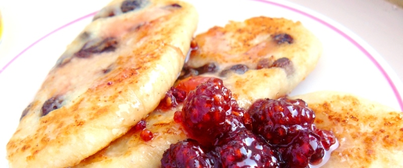

Сырники

1 пачку творога (250гр. менее жирного) смешать с 1 ст.л. сахара, 1 яйцом, щепоткой соли и 2 ст.л. муки. Замесить тесто. Презать 200 гр. чернослива и вмешать в тесто.
Разогреть растительное масло на сковороде. Сформировать блинчики столовой ложкой из теста, обвалять в муке и обжаривать с двух сторон до золотистого цвета.